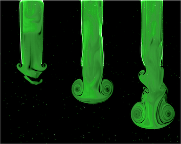
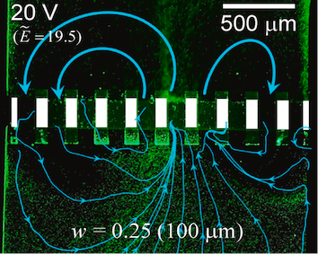
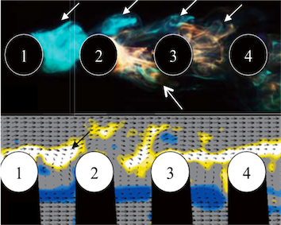
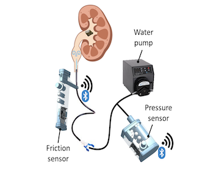
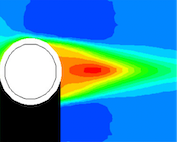
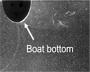

Fluid-structure Interaction
Elucidating fluid-solid coupling mechanism on biology, medicine, multi-body behavior, evergy harvesting, and industry.
Recent Publications
-
 Flow-structure interaction of the starting jet through the flexible circular nozzle (Journal of Fluid Mechanics, 2022)
The flow-structure interaction of the starting jet through the flexible nozzle is experimentally investigated focusing on the optimal flexibility for the thrust generation.
-
 Electroconvective circulating flows by asymmetric coulombic force distribution in multiscale porous membrane
(Journal of Membrane Science, 2021)The micro/nanofluidic device consisting of an array of ion-selective patches is developed so that micropores is formed between patches. Rigorous theoretical and experimental analysis on EC near the membrane demonstrates that asymmetric coulombic force distribution among the micropores induces electroconvective circulating flows, leading to significant enhancement of ion transport and lowering resistivity of the entire system.
-
 Flow around in-line sphere array at moderate Reynolds number
(Physics of Fluids, 2018)We perform a series of water-tunnel experiments to investigate the flow around an in-line sphere array at the Reynolds number of 1000, focusing on how the sphere wake changes by the additional spheres located behind while the spacing between them being varied
Collaboration with Industry
-
 Apparatus for determining removal of foley catheter
Collaborated with Yonsei Severance Hospital (2021)The ureter is a tube through which urine flows and requires a hydrodynamic understanding of urinary tract flow and surgery. In order to proactively determine whether the Foley catheter is removed, equipment capable of developing and receiving force and pressure sensors required for the procedure was developed.
Undergraduate Thesis (Main Advisor)
-
 Suhwan Shim Seoul Nation University (2017)
An experimental study on the effects of superhydrophobic surfaces on the flow around a sphere
-
 Taechang Kim Seoul Nation University (2016)
Analysis of Optimal Shape for Rowing Boat by Flow Measurement using P_bubblevelocimetry